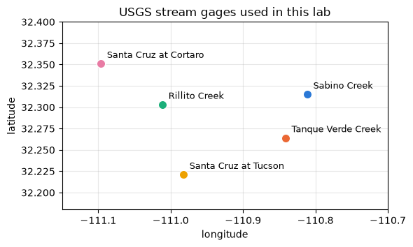

Week 12 Bonus Lab — Streamflow in the Tucson basin
HWRS 564a · Fall 2026 · Optional
This is an optional lab. It uses the same dataretrieval.waterdata tools as the Pinal water-level lab, but for streams instead of wells. You download 30 years of daily streamflow at five USGS gages in the Tucson basin, from Sabino Creek in the Santa Catalina Mountains down to the Santa Cruz River at Cortaro, and compare how often each one flows, when it flows, and how much water reaches it.
How to use this notebook
Run each cell with Shift+Enter. Cells marked # YOUR TURN have something for you to write. Cells marked # CHECK verify your answer — if they run without an error, you’re right.
Learning objectives
By the end of this notebook you can:
Download daily streamflow for several gages in one request with dataretrieval.waterdata.get_daily.
Find and remove duplicate days in a downloaded record.
Summarize a flow record by gage, by month, and by water year with groupby.
Convert mean streamflow to runoff depth, so gages with different drainage areas can be compared.
Describe what the records say about stream-channel recharge and about treated wastewater in the Santa Cruz River.
Part 1 — The five gages
Water from the Santa Catalina and Rincon Mountains drains to the Rillito, which joins the Santa Cruz River northwest of downtown Tucson. We use five gages along that path:
Gage
USGS ID
Where it is
Sabino Creek
09484000
Sabino Canyon, where the creek leaves the Santa Catalina Mountains
Tanque Verde Creek
09484500
Tanque Verde Creek at Tucson, below Sabino Creek
Rillito Creek
09486055
Rillito Creek at La Cholla Blvd, near where it joins the Santa Cruz
Santa Cruz at Tucson
09482500
Santa Cruz River at Congress Street, downtown
Santa Cruz at Cortaro
09486500
Santa Cruz River at Cortaro Road, below the Rillito
Each gage’s drainage area is the land area that drains to it, in square miles. A gage downstream includes the drainage area of every gage upstream of it. The areas and locations below come from the USGS site descriptions.
from pathlib import Pathimport matplotlib.pyplot as pltimport numpy as npimport pandas as pdROOT = Path("../..")CACHE = ROOT /"data"/"cache"GAGES = pd.DataFrame({"site": ["USGS-09484000", "USGS-09484500", "USGS-09486055","USGS-09482500", "USGS-09486500"],"name": ["Sabino Creek", "Tanque Verde Creek", "Rillito Creek","Santa Cruz at Tucson", "Santa Cruz at Cortaro"],"drainage_area_mi2": [35.5, 219, 922, 2222, 3503],"lon": [-110.811, -110.841, -111.011, -110.982, -111.096],"lat": [32.315, 32.264, 32.303, 32.221, 32.351],"color": ["#2a78d6", "#eb6834", "#1baf7a", "#eda100", "#e87ba4"],})GAGES
site
name
drainage_area_mi2
lon
lat
color
0
USGS-09484000
Sabino Creek
35.5
-110.811
32.315
#2a78d6
1
USGS-09484500
Tanque Verde Creek
219.0
-110.841
32.264
#eb6834
2
USGS-09486055
Rillito Creek
922.0
-111.011
32.303
#1baf7a
3
USGS-09482500
Santa Cruz at Tucson
2222.0
-110.982
32.221
#eda100
4
USGS-09486500
Santa Cruz at Cortaro
3503.0
-111.096
32.351
#e87ba4
fig, ax = plt.subplots(figsize=(6, 4.5))for _, g in GAGES.iterrows(): ax.scatter(g["lon"], g["lat"], s=80, color=g["color"], edgecolor="white", zorder=3) ax.annotate(g["name"], (g["lon"], g["lat"]), xytext=(6, 6), textcoords="offset points", fontsize=9)ax.set_xlabel("longitude")ax.set_ylabel("latitude")ax.set_title("USGS stream gages used in this lab")ax.set_aspect(1/ np.cos(np.radians(32.3)))ax.set_xlim(-111.15, -110.70)ax.set_ylim(32.18, 32.40)ax.grid(alpha=0.3)plt.tight_layout()plt.show()

Part 2 — Download the daily flows
get_daily returns one value per day: here, the daily mean discharge (parameter code 00060, statistic code 00003), in cubic feet per second (cfs). You can ask for several gages at once by passing a list of IDs.
We download water years 1996 through 2025. A water year runs from October 1 to September 30 and is named for the year it ends in, so water year 2025 is October 1, 2024 to September 30, 2025. All five gages were running for that whole period.
The download takes about 10 seconds.
from dataretrieval import waterdataraw, md = waterdata.get_daily( monitoring_location_id=list(GAGES["site"]), parameter_code="00060", statistic_id="00003", time="1995-10-01/2025-09-30",)print("request:", md.url)print(f"downloaded from the USGS: {len(raw):,} rows")
Geopandas not installed. Geometries will be flattened into pandas DataFrames.
Retrieving: daily · 2 pages · 59,604 rows
No API key detected — register for higher rate limits at https://api.waterdata.usgs.gov/signup/
request: https://api.waterdata.usgs.gov/ogcapi/v0/collections/daily/items?monitoring_location_id=USGS-09484000%2CUSGS-09484500%2CUSGS-09486055%2CUSGS-09482500%2CUSGS-09486500¶meter_code=00060&statistic_id=00003&time=1995-10-01%2F2025-09-30&limit=50000
downloaded from the USGS: 59,604 rows
Look at the columns, then keep the three we need: the gage ID, the date, and the discharge.
If any of the cells above gave an error, use the saved copy of the same table in data/cache/ instead: remove the # at the start of each line below (select the lines and press Ctrl+/ or Cmd+/), then run the cell. Otherwise skip it.
The Santa Cruz at Tucson gage has more rows than there are days. The USGS stores two overlapping daily records for this gage, one from 1992 to 2011 and one from 1998 to the present, and get_daily returned both. Where they overlap, the same date appears twice. The two values agree on almost every day, so we keep the first one for each gage and date.
Two other gages have a few rows fewer than 10,958. Those days have no row at all, rather than a row with a missing value. Both kinds of gap matter when you count days.
# CHECKassertlen(days_per_gage) ==5, f"expected 5 gages, got {len(days_per_gage)}"assert days_per_gage.max() ==10958, "a gage has more rows than days: did you drop duplicates?"assert days_per_gage.min() >10900, days_per_gage.to_string()assert n_missing == daily["discharge_cfs"].isna().sum(), f"got {n_missing}"assert first_date == pd.Timestamp("1995-10-01"), f"got {first_date}"assert last_date == pd.Timestamp("2025-09-30"), f"got {last_date}"print(days_per_gage.to_string())print(f"{n_missing} missing values, {first_date:%Y-%m-%d} to {last_date:%Y-%m-%d}. Correct.")
Part 3 — How often does each stream flow?
A discharge of exactly 0 cfs means the gage was working and the channel was dry. Most streams in the Tucson basin are dry for much of the year.
YOUR TURN 2
Compute flowing_fraction: a Series indexed by gage giving the fraction of days with discharge greater than zero (a number between 0 and 1).
# YOUR TURNflowing_fraction = ...
# CHECKassertlen(flowing_fraction) ==5, f"expected 5 gages, got {len(flowing_fraction)}"assert flowing_fraction.between(0, 1).all(), "fractions should be between 0 and 1"assert flowing_fraction["Santa Cruz at Cortaro"] ==1.0, flowing_fraction.to_string()assert flowing_fraction.idxmin() =="Rillito Creek", flowing_fraction.to_string()print((flowing_fraction *100).round(1).sort_values().to_string())print("Correct.")
fig, ax = plt.subplots(figsize=(7, 3.2))names = GAGES["name"]ax.barh(names, flowing_fraction[names] *100, color=GAGES["color"], height=0.6)for i, name inenumerate(names): ax.text(flowing_fraction[name] *100+1, i, f"{flowing_fraction[name]:.0%}", va="center", fontsize=9)ax.invert_yaxis()ax.set_xlim(0, 110)ax.set_xlabel("% of days with flow, water years 1996–2025")ax.set_title("How often each gage records flow")ax.grid(alpha=0.3, axis="x")plt.tight_layout()plt.show()
Sabino Creek flows on about two days out of three. Tanque Verde Creek, a few miles downstream, flows on far fewer days, and the Rillito flows least of all, even though each one drains a larger area than the gage above it. Water that leaves the mountains in Sabino Creek soaks into the sandy channel beds on the way down. A stream that loses water to the aquifer through its bed is called a losing stream, and this channel infiltration is one of the main ways the Tucson basin aquifer is recharged.
The Santa Cruz at Cortaro is different: it flowed on every day for 30 years. Part 6 looks at why.
Part 4 — When does each stream flow?
Start with one water year. Water year 2021 had a dry winter and a wet monsoon summer in 2021.
wy = daily[daily["water_year"] ==2021]fig, axes = plt.subplots(len(GAGES), 1, figsize=(9, 9), sharex=True)for ax, (_, g) inzip(axes, GAGES.iterrows()): one = wy[wy["gage"] == g["name"]] ax.plot(one["date"], one["discharge_cfs"], color=g["color"], lw=1.5) ax.set_title(g["name"], loc="left", fontsize=10) ax.set_ylabel("cfs") ax.grid(alpha=0.3)axes[-1].set_xlabel("date")fig.suptitle("Daily mean discharge, water year 2021", y=1.0)plt.tight_layout()plt.show()
Each panel has its own y-axis, because the peaks range from about 1,000 cfs at Sabino Creek to over 7,000 cfs at Cortaro. All five gages respond to the same July–September storms.
One year is not enough to describe a stream’s seasons. Average over all 30 years instead.
YOUR TURN 3
Build monthly_mean: a DataFrame with one row per month (1–12) and one column per gage, holding the mean daily discharge in that month over all 30 years.
Hint: group by two things, daily["date"].dt.month and "gage", take the mean of discharge_cfs, then use .unstack("gage") to move the gages into columns.
# YOUR TURNmonthly_mean = ...
# CHECKassert monthly_mean.shape == (12, 5), f"expected 12 rows x 5 columns, got {monthly_mean.shape}"assertlist(monthly_mean.index) ==list(range(1, 13)), "rows should be months 1-12"assert monthly_mean["Sabino Creek"].idxmin() in (5, 6), monthly_mean["Sabino Creek"].to_string()assert monthly_mean["Santa Cruz at Tucson"].idxmax() in (7, 8), monthly_mean["Santa Cruz at Tucson"].to_string()print(monthly_mean[GAGES["name"]].round(1).to_string())print("Correct.")
fig, ax = plt.subplots(figsize=(8, 4))for _, g in GAGES.iterrows(): ax.plot(monthly_mean.index, monthly_mean[g["name"]], color=g["color"], lw=2, marker="o", ms=5, label=g["name"])ax.set_xticks(range(1, 13))ax.set_xticklabels(list("JFMAMJJASOND"))ax.set_xlabel("month")ax.set_ylabel("mean discharge (cfs)")ax.set_title("Mean discharge by month, water years 1996–2025")ax.legend(fontsize=9, frameon=False)ax.grid(alpha=0.3)plt.tight_layout()plt.show()
The streams draining the mountains have two wet seasons: winter (December to March), from long frontal storms and some snowmelt from the Santa Catalinas, and the summer monsoon (July to September), from short thunderstorms. May and June are the driest months at every gage. The Santa Cruz at Tucson gets most of its water in the monsoon.
The Santa Cruz at Cortaro has a floor under it: even in May and June its mean flow stays near 50 cfs.
Part 5 — How much of the water reaches each gage?
A bigger drainage area collects more rain, so mean discharge alone doesn’t tell you which watershed produces the most water. Dividing by drainage area fixes that. Runoff depth is the mean discharge spread evenly over the drainage area, in inches per year: the depth of water that would cover the whole watershed if a year’s streamflow were spread over it.
Sabino Creek produces several inches of runoff per year from its watershed, which is mostly high, steep, rocky terrain that gets much more rain than the valley floor. Tanque Verde Creek drains six times the area but carries about the same amount of water as Sabino Creek. The Rillito drains 26 times the area of Sabino Creek and also carries about the same amount. Two things explain the drop: the lower parts of these watersheds are desert that produces little runoff, and water is lost through the channel beds between the gages.
The USGS and others estimate stream-channel recharge by comparing flows at upstream and downstream gages on the same day, after accounting for evaporation and for water that enters the channel in between. These five gages are too far apart to do that carefully here, but the pattern above is the starting point for that kind of study.
The Santa Cruz at Cortaro has more runoff per square mile than the Rillito or the Santa Cruz at Tucson, even though it is downstream of both. Part 6 explains why.
Part 6 — The Santa Cruz River at Cortaro
The Santa Cruz at Tucson is dry five days out of six. The Santa Cruz at Cortaro, downstream, has not been dry once in 30 years. Most of its everyday flow is treated wastewater (effluent) from Pima County’s two large water reclamation facilities, Agua Nueva and Tres Rios, which discharge into the river between the two gages. Storm runoff from the Rillito and the Santa Cruz is added on top of that.
The median daily flow is a good measure of that everyday flow, because storm days are a small fraction of the year and don’t move the median much.
YOUR TURN 5
Compute median_by_wy: a Series indexed by water year (1996–2025) giving the median daily discharge at the Santa Cruz at Cortaro in each water year.
# YOUR TURNmedian_by_wy = ...
# CHECKassertlen(median_by_wy) ==30, f"expected 30 water years, got {len(median_by_wy)}"assert median_by_wy.index.min() ==1996and median_by_wy.index.max() ==2025cortaro = daily[daily["gage"] =="Santa Cruz at Cortaro"]assert median_by_wy[2010] == cortaro.loc[cortaro["water_year"] ==2010, "discharge_cfs"].median()print(median_by_wy.round(1).to_string())print("Correct.")
fig, ax = plt.subplots(figsize=(8, 3.6))ax.plot(median_by_wy.index, median_by_wy.values, color="#e87ba4", lw=2, marker="o", ms=5)ax.set_xlabel("water year")ax.set_ylabel("median daily discharge (cfs)")ax.set_ylim(0, None)ax.set_title("Santa Cruz River at Cortaro: median daily flow by water year")ax.grid(alpha=0.3)plt.tight_layout()plt.show()
The median flow rose through the late 1990s, peaked around 2003–2004, and has been lower since about 2015. The record alone can’t tell you why. Some questions to look into if you are interested:
How much effluent did the two reclamation facilities discharge each year, and did that change? Both were rebuilt in the early 2010s.
How much of the effluent is now sent to recharge basins or to Tucson’s reclaimed water system instead of the river?
How much of the water discharged to the river soaks into the channel before it reaches Cortaro?
Pima County publishes annual reports on the effluent-dependent reach of the Santa Cruz River (search for “Living River” reports), which track flow and water quality along this stretch.
Going further
Add another gage. Pantano Wash at Broadway (09485450) and Rincon Creek near Tucson (09485000) drain the Rincon Mountains. Add them to GAGES and rerun.
Change the time argument to start in 1990 and find the January 1993 flood, the largest flow on record at several of these gages. (Some gages have gaps before 1996.)
Compare one gage with a nearby well. The Week 12 slides use well WR-52, south of the Rillito, whose daily record is in data/cache/waterdata_321517110571802_daily.csv.
Stuck?
The download hangs or fails: interrupt the kernel if it hangs, then run the cell under If the download fails in Part 2.
days_per_gage shows 15,000+ days for the Santa Cruz at Tucson: run the drop_duplicates cell in Part 2.
monthly_mean has 60 rows and one column: you left out .unstack("gage").